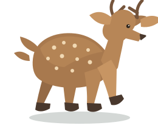

A SLOWER KIND OF EVERYDAY
made to
stay. M
/ 01
stay. M
/ 01
Curiosity
over convention.
A FEW THINGS I’VE MADE
전략부터 디테일까지, 브랜드가 더
자기답게 빛나는 순간을 디자인합니다.
01 / SCROLLING STUDY
스크롤을 내리면 사슴은 한 걸음씩 걷고,
숲은 서로 다른 속도로 뒤로 흐릅니다.

03 / WORDS INTO DESIGN
SCROLL TO SEE IT TAKE SHAPE
04 / HORIZONTAL CASE STUDIES
스크롤을 내리면 네 개의 프로젝트가
화면을 가로질러 펼쳐집니다.
A LITTLE ABOUT ME
✳작은 관찰에서 시작해 오래 기억되는 경험을 만드는 디자이너입니다. 브랜드의 목소리와 사용자의 마음 사이, 그 섬세한 균형을 시각 언어로 풀어냅니다.
HAVE A GOOD ONE IN MIND?